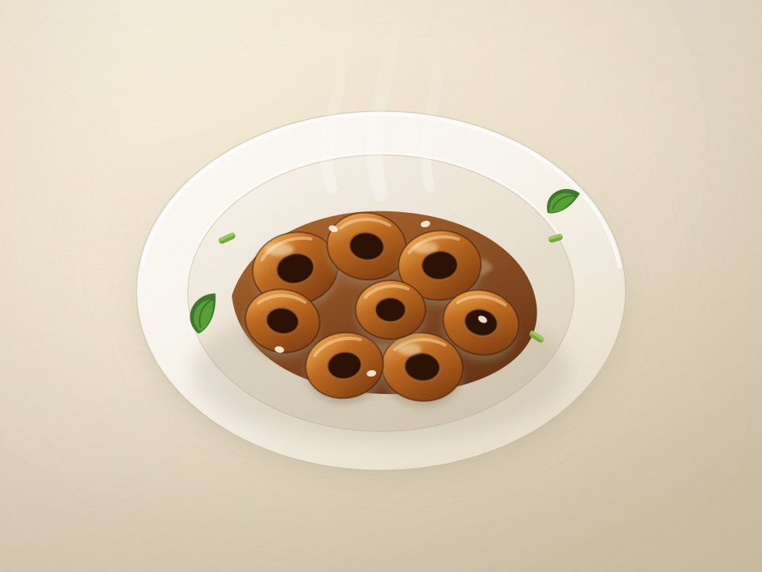
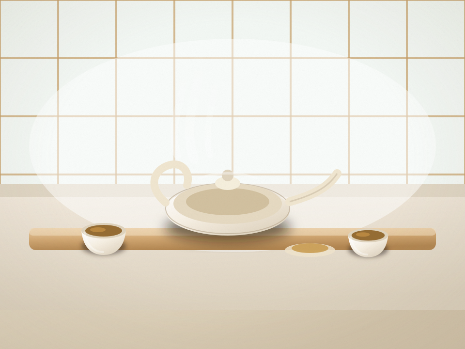
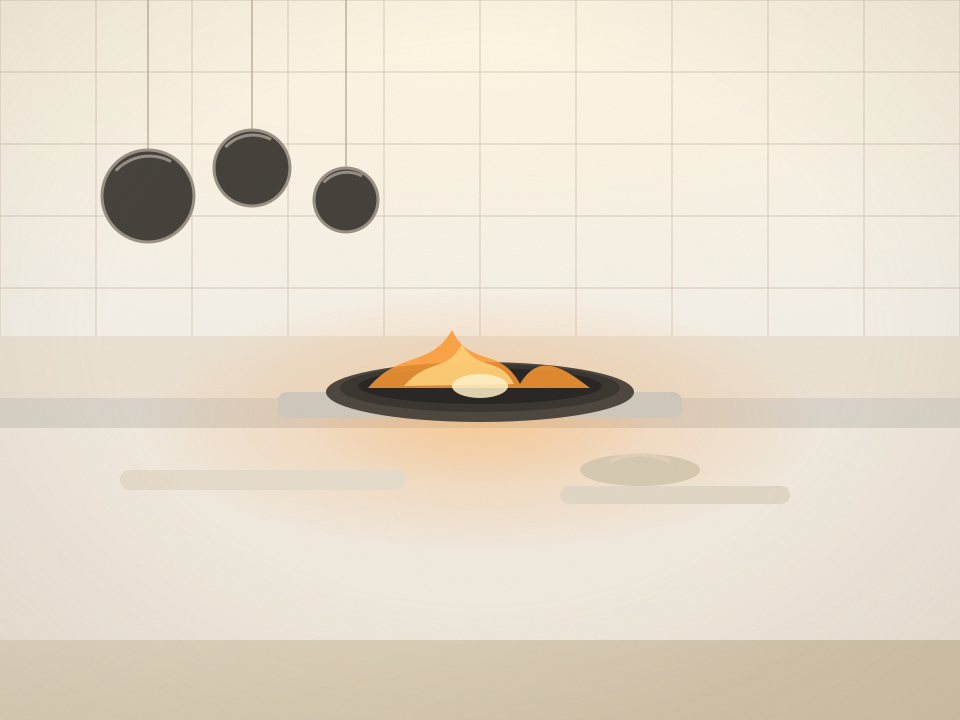
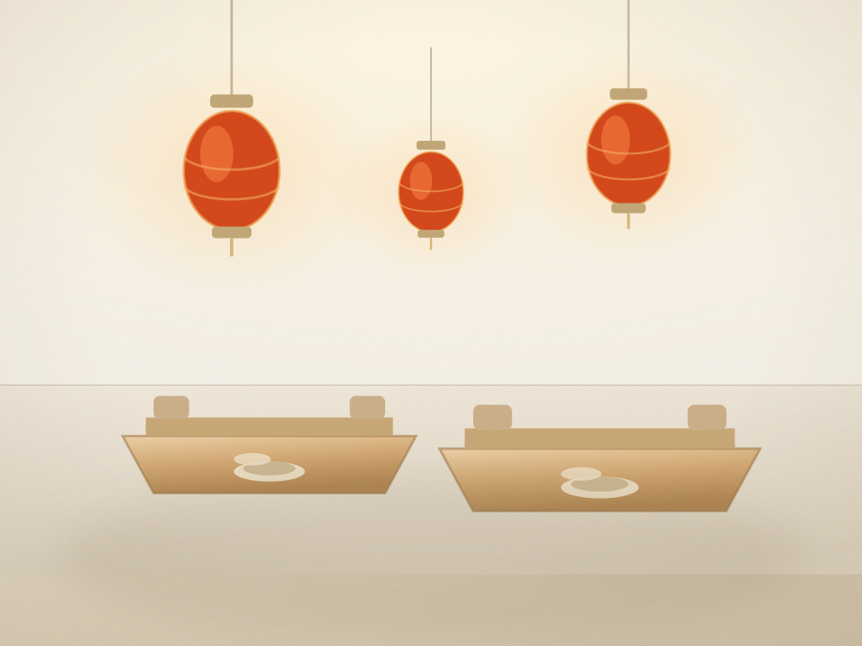

招牌九转大肠
¥88大肠套洗七遍,先炸后烧,酸甜香辣咸五味俱全,起锅前淋一勺九转汁。
主料
- 猪大肠中段 400g
配菜
- 香菜段
- 葱花
- 姜末
- 蒜末
- 熟白芝麻
调料
冰糖、香醋、酱油、花椒油、肉桂、砂仁
现做约 25 分钟,建议订座时预留;大肠属内脏,忌口请提前说明。


关于鲁香居
鲁香居开在芙蓉街的一条老巷里,只有 14 张桌子。老板姓周,章丘人, 十六岁起在大明湖边的馆子学灶。他说鲁菜没别的诀窍—— 「该吊八小时的汤,就不能只吊五个小时。」
所以我们的清汤要用老母鸡、猪骨、火腿吊到澄澈见底;奶汤要熬到乳白挂勺; 九转大肠要套洗七遍、先炸后烧;连一碟甜面酱都是自己晒的。 菜单跟着黄河走:春有蒲菜,夏有对虾,秋有鲤鱼,冬有把子肉。
清汤见底、奶汤挂勺,一天一锅,卖完为止。
八成油温,十五秒出锅,脆嫩全靠手上功夫。
门店现炒现烧,厨房全开放,看得见火候。
灶上功夫
同样是火,用法不同,味道就不同。
老母鸡、猪骨、火腿冷水下锅,小火吊八小时,撇净浮沫,汤清得能照见碗底。
八成油温,十五秒出锅。腰花、肚仁、鸡胗,靠的全是一瞬间的脆。
整料下锅,大翻勺不散形,汁要收到恰好挂住,海参、鱼肚最考这一手。
先炸后烧,糖色上得透。九转大肠的七道味,全靠这一锅慢慢煨出来。
店内
青砖墙、木格窗、一口天井。老宅原样留着,只添了几盏暖灯。

食客说
订座
小馆只有 14 桌,周五至周日建议提前 1 天预订。 电话订座最快,线上留言我们会在 30 分钟内回电确认。
午市 11:00 – 14:00
晚市 17:00 – 21:30(周一午市休)
济南市历下区芙蓉街 128 号(近府学文庙)
步行 3 分钟可达大明湖西南门
0531-8619 8866
微信同号 138 0000 8866